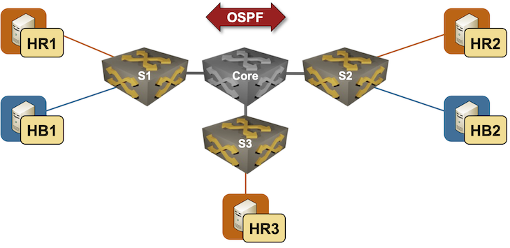

Implement VRF-Lite with VXLAN
VRF-Lite is a design in which the virtual routing domains (VRFs) are built with additional point-to-point virtual links (usually VLAN segments) between network devices. For example, you’d need these VLANs in the following lab topology:
- Red VLAN (routed subinterface) on the links between the core router and S1, S2, and S3.
- Blue VLAN (routed subinterface) on the links between the core router and S1 and S2.

You can use VXLAN segments instead of point-to-point (routed) VLANs to implement VRF-Lite. For example, you could create:
- A VXLAN segment (VLAN) in VRF Red between S1, S2, and S3
- Another VXLAN segment in VRF Blue between S1 and S2.
You’ll figure out how to make that idea work in this lab exercise.
Expert
This is an expert-level challenge lab. We expect you to know what you’re doing – all you’ll get from us are a few configuration and verification guidelines.
Device Requirements
You can use any device supported by the netlab OSPF and VRF configuration modules. The device should also support
- VXLAN with static ingress replication
- Routing in and out of VXLAN tunnels (VXLAN RIOT)
- Running a routing protocol on a VXLAN segment1
Start the Lab
Assuming you already set up your lab infrastructure:
- Change directory to
vxlan/5-vrf-lite - Execute netlab up
- Log into lab devices with netlab connect and verify that the IP addresses and the OSPF are properly configured.
Existing Device Configuration
- The switches in your lab (S1, S2, and S3) are preconfigured with red and blue VRFs.
- IPv4 addresses are configured on all links in your lab (details).
- Linux hosts use the adjacent switches as the default gateways
- The switches run OSPF in area 0 in the default VRF with the core router (details).
Configuration Guidelines
You’ll implement the transport between VRF instances on S1, S2, and S3 with VXLAN segments:
- Create transport VLANs for the Red and Blue VRFs (one VLAN per VRF)
- Create VLAN interfaces for the transport VLAN. Use the following IP addresses on the VLAN interfaces:
| Node | Interface | IPv4 Address | Description |
|---|---|---|---|
| s1 | Vlan101 | 172.17.0.1/24 | VLAN red (101) -> [s2,s3] (VRF: red) |
| Vlan102 | 172.17.1.1/24 | VLAN blue (102) -> [s2] (VRF: blue) | |
| s2 | Vlan101 | 172.17.0.2/24 | VLAN red (101) -> [s1,s3] (VRF: red) |
| Vlan102 | 172.17.1.2/24 | VLAN blue (102) -> [s1] (VRF: blue) | |
| s3 | Vlan101 | 172.17.0.3/24 | VLAN red (101) -> [s1,s2] (VRF: red) |
- Using the procedure you mastered in the Extend a Single VLAN Segment with VXLAN lab exercise, create VXLAN segments to transport transit VLAN frames between S1, S2, and S3.
- Configure routing protocols between S1, S2, and S3 in Red and Blue VRFs. Use OSPF if you can and BGP as a potential fallback.
Verification
- Check VXLAN segments on S1, S2, and S3. Try to ping between the VLAN interfaces. Please note that you have to use VRF ping as the VLAN interfaces belong to Red/Blue VRFs:
Using VRF Red to ping the Red VLAN interface on S2 from S1
s1#ping vrf red 172.17.0.2
PING 172.17.0.2 (172.17.0.2) 72(100) bytes of data.
80 bytes from 172.17.0.2: icmp_seq=1 ttl=64 time=1.87 ms
80 bytes from 172.17.0.2: icmp_seq=2 ttl=64 time=1.08 ms
80 bytes from 172.17.0.2: icmp_seq=3 ttl=64 time=0.898 ms
80 bytes from 172.17.0.2: icmp_seq=4 ttl=64 time=1.05 ms
80 bytes from 172.17.0.2: icmp_seq=5 ttl=64 time=1.02 ms
--- 172.17.0.2 ping statistics ---
5 packets transmitted, 5 received, 0% packet loss, time 8ms
rtt min/avg/max/mdev = 0.898/1.186/1.874/0.349 ms, ipg/ewma 2.002/1.518 ms
Tip
If needed, follow the troubleshooting hints from the Extend a Single VLAN Segment with VXLAN lab exercise.
- Check in-VRF routing protocol adjacences between S1, S2, and S3.
OSPF neighbors (global and VRF) on S1
s1#show ip ospf neighbor vrf all
Neighbor ID Instance VRF Pri State Dead Time Address Interface
10.0.0.4 1 default 1 FULL 00:00:32 10.1.0.1 Ethernet1
10.0.0.2 100 red 1 FULL/BDR 00:00:31 172.17.0.2 Vlan101
10.0.0.3 100 red 1 FULL/DR 00:00:30 172.17.0.3 Vlan101
10.0.0.2 101 blue 0 FULL 00:00:31 172.17.1.2 Vlan102
- Check VRF routing tables on S1, S2, and S3. Remote IP prefixes should be reachable as OSPF routes with next hops attached to the VLAN interfaces.
Routing table for VRF Red on S1
s1#show ip route vrf red | begin Gateway
Gateway of last resort is not set
C 172.16.0.0/24
directly connected, Ethernet2
O 172.16.1.0/24 [110/20]
via 172.17.0.2, Vlan101
O 172.16.2.0/24 [110/20]
via 172.17.0.3, Vlan101
C 172.17.0.0/24
directly connected, Vlan101
- Ping between hr1, hr2, and hr3
- Ping between hb1 and hb2
Cheating
- Shut down your lab with the netlab down command
- Start the lab from the
solution.ymltopology with the netlab up solution.yml command - Explore the S1/S2/S3 device configuration
Reference Information
Lab Wiring
| Origin Device | Origin Port | Destination Device | Destination Port |
|---|---|---|---|
| s1 | Ethernet1 | core | eth1 |
| s2 | Ethernet1 | core | eth2 |
| s3 | Ethernet1 | core | eth3 |
| hr1 | eth1 | s1 | Ethernet2 |
| hr2 | eth1 | s2 | Ethernet2 |
| hr3 | eth1 | s3 | Ethernet2 |
| hb1 | eth1 | s1 | Ethernet3 |
| hb2 | eth1 | s2 | Ethernet3 |
Lab Addressing
| Node/Interface | IPv4 Address | IPv6 Address | Description |
|---|---|---|---|
| s1 | 10.0.0.1/32 | Loopback | |
| Ethernet1 | 10.1.0.2/30 | s1 -> core | |
| Ethernet2 | 172.16.0.1/24 | s1 -> hr1 (VRF: red) | |
| Ethernet3 | 172.16.3.1/24 | s1 -> hb1 (VRF: blue) | |
| s2 | 10.0.0.2/32 | Loopback | |
| Ethernet1 | 10.1.0.6/30 | s2 -> core | |
| Ethernet2 | 172.16.1.2/24 | s2 -> hr2 (VRF: red) | |
| Ethernet3 | 172.16.4.2/24 | s2 -> hb2 (VRF: blue) | |
| s3 | 10.0.0.3/32 | Loopback | |
| Ethernet1 | 10.1.0.10/30 | s3 -> core | |
| Ethernet2 | 172.16.2.3/24 | s3 -> hr3 (VRF: red) | |
| core | 10.0.0.4/32 | Loopback | |
| eth1 | 10.1.0.1/30 | core -> s1 | |
| eth2 | 10.1.0.5/30 | core -> s2 | |
| eth3 | 10.1.0.9/30 | core -> s3 | |
| hr1 | |||
| eth1 | 172.16.0.5/24 | hr1 -> s1 | |
| hr2 | |||
| eth1 | 172.16.1.6/24 | hr2 -> s2 | |
| hr3 | |||
| eth1 | 172.16.2.7/24 | hr3 -> s3 | |
| hb1 | |||
| eth1 | 172.16.3.8/24 | hb1 -> s1 | |
| hb2 | |||
| eth1 | 172.16.4.9/24 | hb2 -> s2 |
OSPF Routing (Area 0)
| Router | Interface | IPv4 Address | Neighbor(s) |
|---|---|---|---|
| s1 | Loopback | 10.0.0.1/32 | |
| Ethernet1 | 10.1.0.2/30 | core | |
| s2 | Loopback | 10.0.0.2/32 | |
| Ethernet1 | 10.1.0.6/30 | core | |
| s3 | Loopback | 10.0.0.3/32 | |
| Ethernet1 | 10.1.0.10/30 | core | |
| core | Loopback | 10.0.0.4/32 | |
| eth1 | 10.1.0.1/30 | s1 | |
| eth2 | 10.1.0.5/30 | s2 | |
| eth3 | 10.1.0.9/30 | s3 |
-
Some devices cannot run control-plane protocols on VXLAN segments. ↩